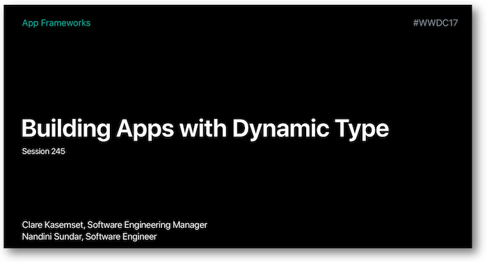

WWDC 2017 : Application du Dynamic Type
Cette présentation visualisable sur le site développeur officiel d'Apple (session 245) a pour but d'expliquer ce qu'est le Dynamic Type et comment le mettre en oeuvre par le biais de bonnes pratiques.


Les thèmes abordés ainsi que leur référence temporelle au sein de la vidéo sont décrits ci-dessous :
-
Styles de texte (06:06) ⟹ amélioration iOS 11
-
Police personnalisée (08:17) ⟹ nouveauté iOS 11
-
Utilisation de pages web (09:25)
-
Affichage sur plusieurs lignes (10:14)
-
ScaledValue (12:56) ⟹ nouveauté iOS 11
-
Grossissement d'éléments voisins (13:36)
-
PreferredContentSizeCategory (15:23)
-
Table view cells (16:38)
-
Images (20:13)
-
Exemple (24:32)
Par la suite, le fait de cliquer sur un titre permet d'ouvrir la vidéo de présentation Apple directement au moment indiqué.
Styles de texte (06:06) #
Avec iOS 11, tous les styles de texte s'adaptent aux 5 tailles de texte disponibles en accessibilité ce qui n'était le cas que pour le style body auparavant.
Dans l'Interface Builder de Xcode, il suffit d'indiquer le style souhaité dans la partie Attribute Inspector et de cocher la case Dynamic Type qui permettra d'adapter automatiquement la taille selon les réglages.

Au niveau code, on peut obtenir exactement le même résulat.

Police personnalisée (08:17) #
L'introduction de la classe UIFontMetrics en iOS 11 permet à une police personnalisée de respecter le comportement du grossissement de caractères.

Utilisation de pages web (09:25) #
Afin d'assurer une compatibilité entre le comportement attendu sur un terminal iOS utilisant le Dynamic Type et l'affichage de pages web sur ce même type de terminal, il est possible d'indiquer le style de texte souhaité au niveau CSS.

Affichage sur plusieurs lignes (10:14) #
Afin d'éviter la troncature d'un texte trop long dans un label après grossissement, il est conseillé de mettre la valeur 0 dans le nombre de lignes à afficher, ce qui aura pour signification d'afficher l'ensemble des lignes.

ConstraintEqualToSystemSpacingBelow (11:31) #
Dans la mise en place de contraintes graphiques entre deux éléments de type label s'appuyant sur leur 'baseline', il est préférable de ne pas mettre de valeur fixe pour éviter le chevauchement lors de grossissement de caractères.
Une constante égale à Standard Value dans l'Interface Builder de Xcode ou une définition programmatique de la contrainte utilisant constraintEqualToSystemSpacingBelow (nouveauté iOS 11) permet de résoudre ce problème.

ScaledValue (12:56) #
Introduite en iOS 11, la méthode scaledValue permet de déterminer la hauteur d'un élement graphique contenant du texte selon le grossissement implémenté.
À utiliser par exemple pour un bouton contenant du texte dont la taille est liée au Dynamic Type et dont on souhaite connaître la hauteur.
Grossissement d'éléments voisins (13:36) #
Arrivé à un certain seuil de grossissement, des éléments verticalement voisins peuvent finir par devenir illisibles et même transformer une interface graphique initialement ergonomique en une juxtaposition grossière d'objets.
Dans ce cas, il est recommandé de passer à un alignement horizontal lorsque le grossisement problématique est atteint.
PreferredContentSizeCategory (15:23) #
Il existe 2 familles bien distinctes qui contiennent les paliers de grossissement souhaités :
-
la première comprend les 7 seuils de base allant de
extraSmallàextraExtraExtraLarge, -
la seconde est spécifique à l'accessibilité et doit être activée pour être prise en compte : elle comprend 5 seuils qui vont de
accessibilityMediumàaccessibilityExtraExtraExtraLarge.
Ces différents seuils sont accessibles depuis le traitCollection de la vue ou bien directement depuis l'application par le biais de la méthode preferredContentSizeCategory.

Il est possible de mettre en place des conditions pour savoir si un seuil de grossissement a été atteint de façon à faire un réarrangement graphique des éléments quand cela est nécessaire.

Table view cells (16:38) #
L'utilisation de table view cells standards va permettre d'adapter automatiquement la disposition d'une cellule en fonction du Dynamic Type grâce au cell-sizing.

Dans le cadre de cellules personnalisées, il faut mettre en place les contraintes pour définir le rendu souhaité et laisser le cell-sizing opérer.

Images (20:13) #
Le Dynamic Type permet aussi le grossissement des images à la fois sur les vues et les barres de tabulation.
Les explications détaillées de ce point se trouvent dans la partie développement.
Exemple (24:32) #
Une application d'exemple est proposée pour répondre aux questions que se posent les développeurs face aux éventuels problèmes rencontrés dans l'implémentation du Dynamic Type (regarder l'introduction avant de lire la suite) :
-
Pourquoi mon implémentation du Dynamic Type ne fonctionne-t-elle pas ? (26:19)
(aide ⟹adjustsFontForContentSizeCategory(code) ouAutomatically Adjusts Font(Attribute Inspector) +scaledFontsi police personnalisée) -
Comment modifier le positionnement des éléments pour adapter la lisibilité à la largeur maximale de texte ? (28:01)
(aide ⟹ mettre en place les contraintes à activer pour un positionnement vertical des éléments impactés + déterminer le moment auquel activer ces nouvelles contraintes avecpreferredContentSizeCategory+traitCollectionDidChangepour être notifié d'un changement de taille de texte) -
Comment adapter la taille de mes
table view cellsà leur contenu ? (31:03)
(aide ⟹UITableViewAutomaticDimension+estimatedRowHeight) -
Pourquoi la taille de mes images ne suit pas le grossissement de texte ? (32:11)
(aide ⟹adjustsImageSizeForAccessibilityContentSizeCategory) -
Comment mettre une définition visuelle parfaite aux images après grossissement ? (33:07)
(aide ⟹Preserve Vector Datadans l'Attribute Inspector du .xcassets) -
Comment utiliser l'instrument Accessibility Inspector pour vérifer le grossissement de texte ? (34:56)